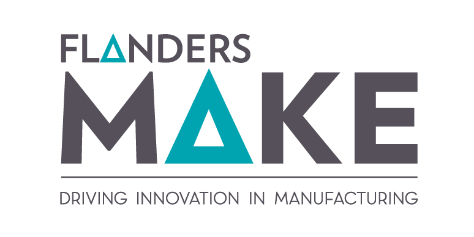
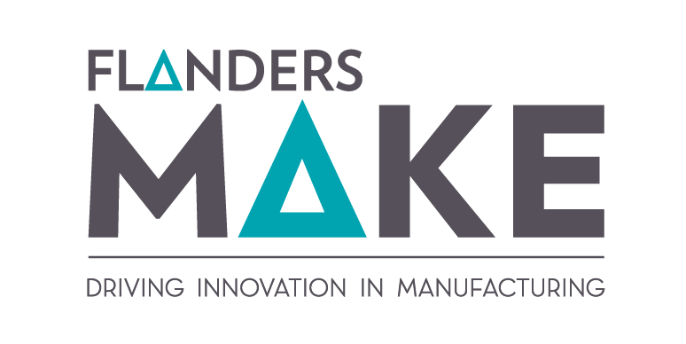

MEDLI
Managing Edge Deployment of Large Deep Learning Models in Industry

Marjolein Deryck
Project Manager
marjolein.deryck@kuleuven.be
 

Challenge
An increasing number of companies see the potential of AI at the 'edge' of the network, i.e., performing local data processing to enable real-time decisions without relying on the cloud. At the same time, modern deep-learning models are growing larger at a rapid pace, making it challenging to deploy them on edge devices with limited computing power and memory.
On top of that, companies often struggle with:
- Specializing (transfer learning) and sufficiently "compressing" large pre-trained AI models so they can run both quickly and accurately on edge platforms.
- Choosing the best combination of edge hardware and software for their specific needs.
- Monitoring deployed AI models in operation, so they can quickly detect and address declines in performance or accuracy.
For whom?
- Industrial end-users (manufacturing, automotive, agriculture, energy, …) wanting real-time local data processing.
- Technology and software providers delivering AI solutions and looking to support edge-based deployments for their clients.
- System integrators building smart devices or production lines with on-site AI capabilities.
Approach
- We collect and translate existing research outcomes on model compression, edge-hardware prototyping, and AI monitoring.
- We develop an intuitive graphical interface that lets you adapt and optimize pre-trained models using your own (limited) dataset.
- We provide guides, workshops, and webinars to get your R&D team up to speed.
- We offer follow-up activities for companies interested in taking the MEDLI approach further in their own applications.
Goals
Within the MEDLI project (Managing Edge Deployment of Large Deep Learning Models in Industry), we tackle these challenges and provide practical, industry-ready solutions. We consolidate state-of-the-art knowledge into a user-friendly approach that allows companies to:
1. Accelerate edge AI model development
- Leverage pre-trained deep learning models and transfer-learning techniques.
- Compress these models (e.g., pruning, quantization) to reduce their size while maintaining sufficient accuracy.
2. Easily select the right hardware and software
- An overview of relevant edge hardware (GPU, TPU, CPU, etc.) and corresponding compilers & deployment tools.
- Practical guidelines and decision trees: which solution best fits your application requirements?
3. Monitor AI models in operation
- Best practices and tool overviews to keep tabs on a model's health (accuracy, errors, drift).
- Automatic detection of performance drops, with triggers for re-training or other adjustments.
4. Generic use cases and demonstrations
- A sample use case on image processing (e.g. vision systems for quality inspection).
- A sample use case on time-series data (e.g. vibration, sensor, or audio signals).
- Both are fully worked out with step-by-step documentation, serving as a blueprint for companies.